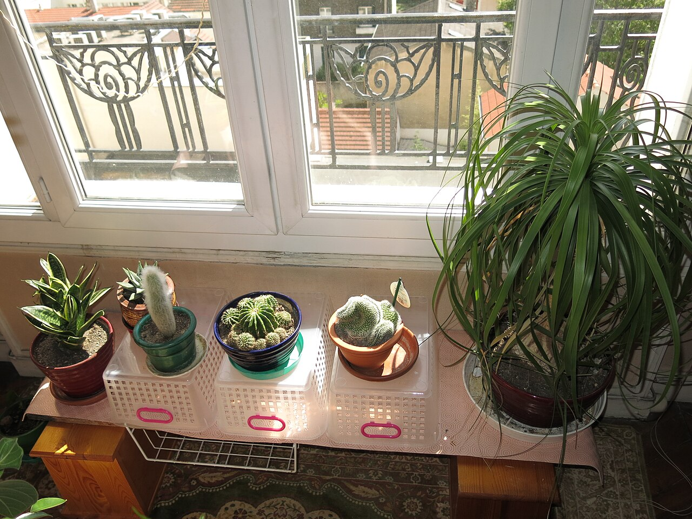
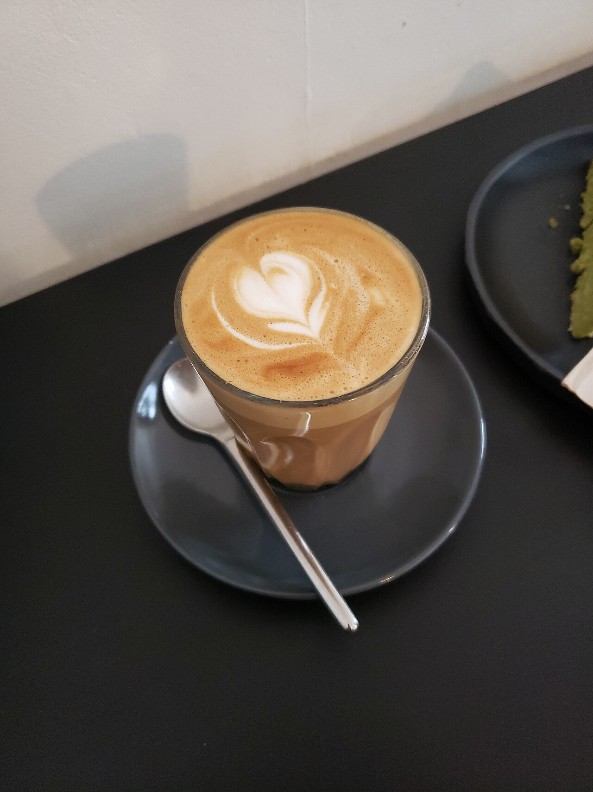
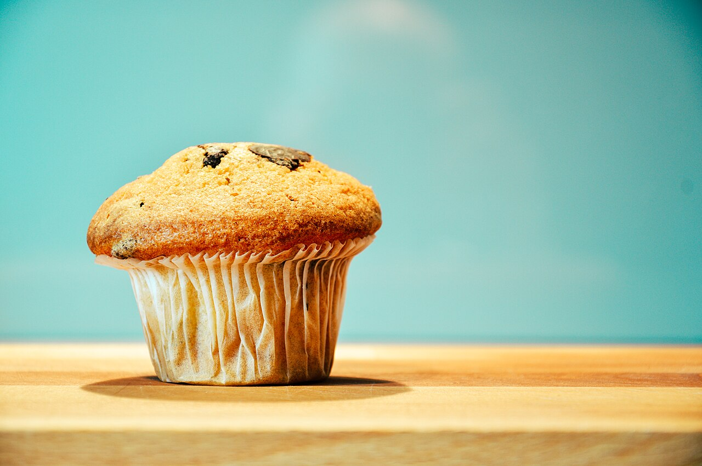
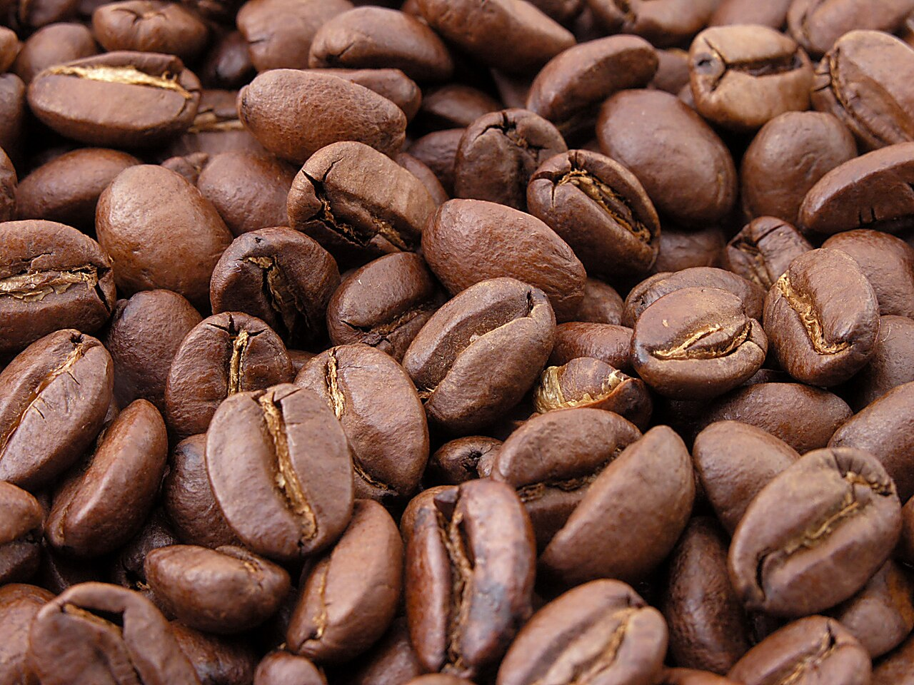
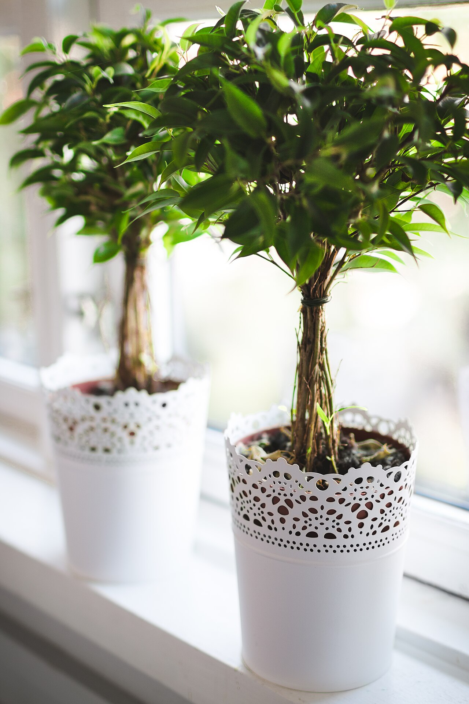

karabi cafe / 白山市八ツ矢町
09:00 morning
空と日、と書いて「からび」
「空日」という名前から思い浮かぶのは、空の青さと、やわらかな日の光。
朝のカーテン越しの明るさ、昼の高い空、夕方に色を変えていく雲。
一日のなかで表情を変える空を眺めながら、温かいカップを手に取る。
そんな静かな時間が似合うカフェです。
※店名から連想したイメージです。名前の由来は取材のうえ差し替えます。

12:00 high noon
ラテアートのイメージ
焼き菓子のイメージ
コーヒー豆のイメージ
昼のひととき
飲み物やおやつを片手に、肩の力を抜いて過ごす昼下がりの雰囲気を、写真でイメージしてみてください。



※写真はいずれもイメージです。実際のメニューは確認中です。
17:00 dusk
ゆっくり、日が傾くまで
窓の外の空が少しずつ色を変えていく頃。
急ぐ予定のない日は、もう一杯ぶんだけ長くいてもいい。
本を開いても、ぼんやりしても、誰かと話し込んでも。
空日は、そんな過ごし方が似合うカフェのイメージでご案内します。
